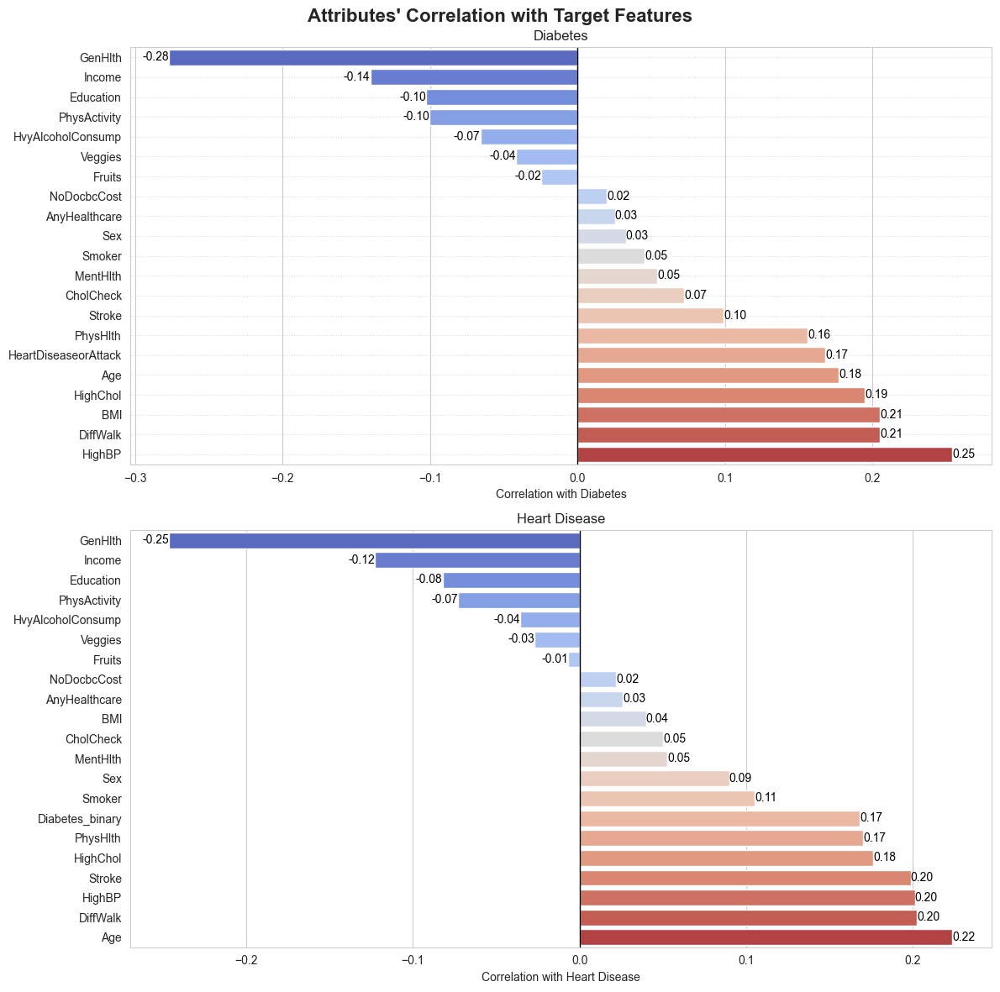
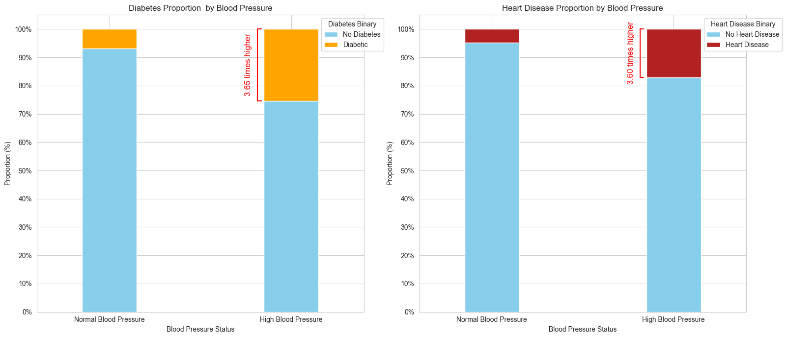
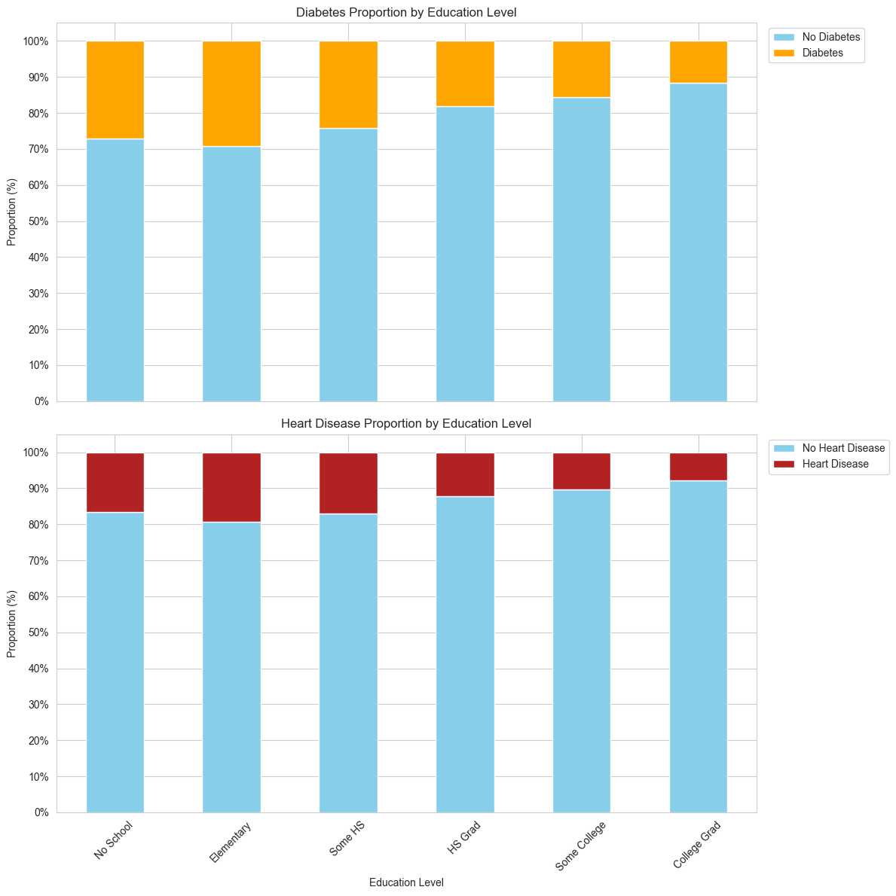
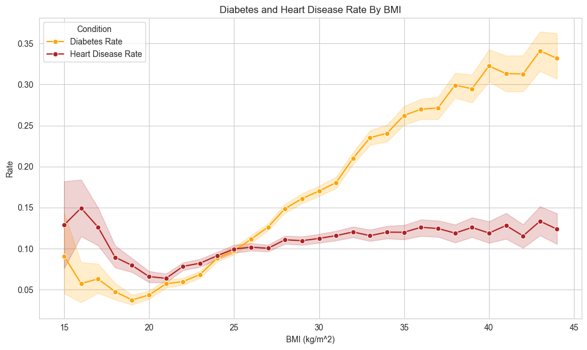
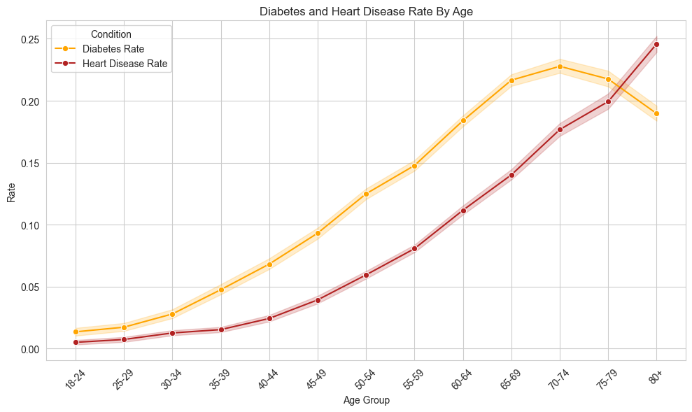
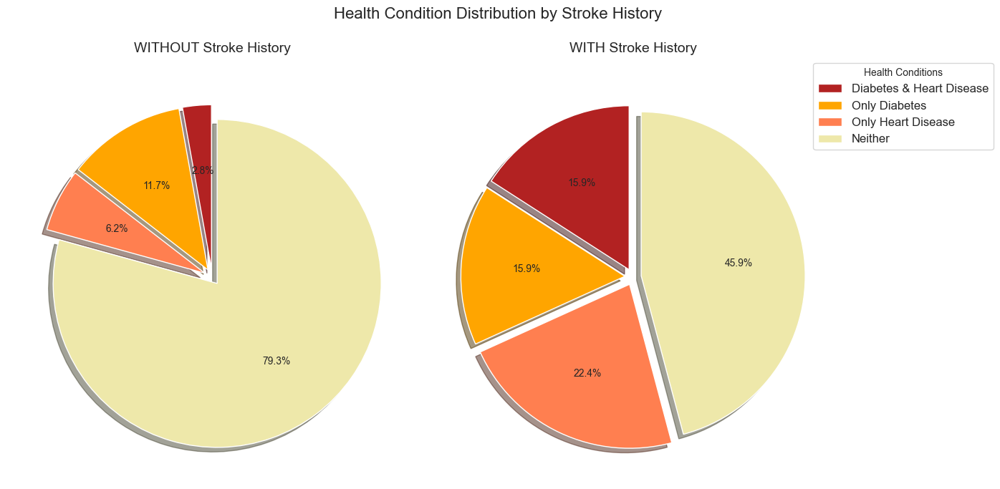
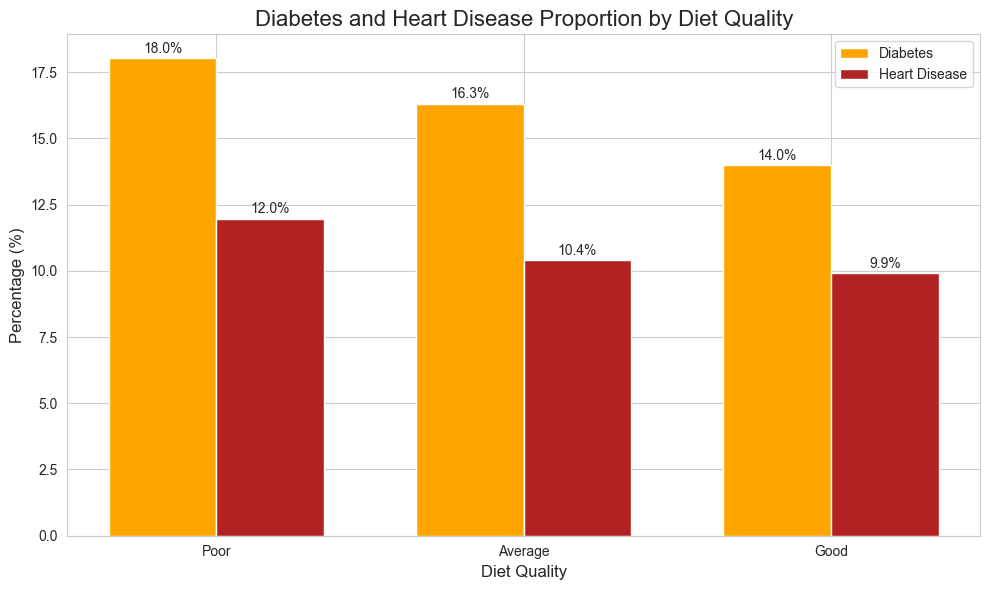
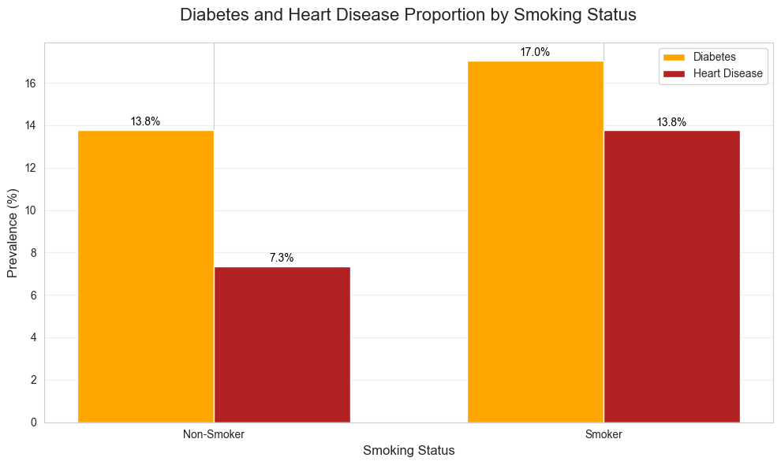

Introduction
These visualizations explore the connections between lifestyle, health factors, and chronic conditions like diabetes and heart disease. They're based on publicly available survey data from the CDC's 2015 Behavioral Risk Factor Surveillance System (BRFSS), which collects health information from adults across the U.S. While this data shows clear patterns, remember that individual health depends on many factors—use these insights as conversation starters with your doctor, not medical advice.
Understanding Risk Factors
This visualization shows which health factors have the strongest relationships with diabetes and heart disease. The correlation values range from -0.3 to 0.3, where:
- Positive values (red/orange bars to the right) indicate factors that increase risk
- Negative values (blue bars to the left) indicate factors that decrease risk
- Values closer to 0 mean weaker relationships
Key Insights:
- For diabetes, high blood pressure (0.25), high cholesterol (0.19), and age (0.18) show the strongest positive associations
- For heart disease, age (0.22), high blood pressure (0.20), and stroke history (0.20) have the strongest relationships
- Good general health (-0.28 for diabetes, -0.25 for heart disease) and higher income (-0.14 for diabetes, -0.12 for heart disease) appear to be protective factors
- Physical activity shows a negative correlation with both conditions, suggesting that being active may help reduce risk
These patterns highlight the importance of managing blood pressure and cholesterol levels, especially as we age, to reduce the risk of both diabetes and heart disease.
Blood Pressure: A Critical Factor
For Diabetes:
- Among people with high blood pressure, about 25% have diabetes
- Only about 7% of those with normal blood pressure have diabetes
- You're about 3.65 times more likely to have diabetes if you have high blood pressure
For Heart Disease:
- Around 17% of people with high blood pressure have heart disease
- Only about 5% of those with normal blood pressure have heart disease
- You're 3.6 times more likely to have heart disease if you have high blood pressure
These findings emphasize the critical importance of maintaining healthy blood pressure levels. Regular monitoring and management could significantly reduce your risk.
Education's Impact
For Diabetes:
- No formal education: 27% diabetes rate
- College graduates: 12% diabetes rate
- More than a 50% reduction in diabetes prevalence from lowest to highest education level
For Heart Disease:
- No formal education: 17% heart disease rate
- College graduates: 7% heart disease rate
- Consistent inverse relationship across all education levels
Education may play a protective role due to better health literacy, access to healthcare, and healthier lifestyle choices.
BMI and Its Connection
Key Findings:
- Diabetes: Dramatic increase as BMI rises
- Low risk (under 5%) for BMI below 20
- Moderate risk (5-15%) for BMI between 20-30
- High risk (15-35%) for BMI above 30
- Heart disease: Risk stays between 10-15% across BMI levels, with a slight increase at higher BMI
Maintaining a BMI below 25 is crucial for diabetes prevention, with a less pronounced impact on heart disease.
How Age Influences Risk
Diabetes Risk:
- Young adults (18-24): 1.4% risk
- Peaks at age 70-74: 23% risk
- Slight decrease for 80+: 19%
Heart Disease Risk:
- Young adults: 0.7% risk
- Rises to 25% for 80+
- Continues climbing through all age groups
Preventive measures and regular screenings are vital after age 45.
Stroke History and Other Conditions
Without Stroke History:
- 79.3% have neither condition
- 11.7% have only diabetes
- 6.2% have only heart disease
- 2.8% have both
With Stroke History:
- 45.9% have neither condition
- 15.9% have only diabetes
- 22.4% have only heart disease
- 15.9% have both
Stroke survivors have a significantly higher risk of diabetes and heart disease, requiring comprehensive health management.
Diet Quality Matters
Diabetes:
- Poor diet: 18.0% prevalence
- Good diet: 14.0% prevalence
Heart Disease:
- Poor diet: 12.0% prevalence
- Good diet: 9.9% prevalence
Improving diet quality can reduce diabetes risk by 22% and heart disease risk by 17.5%.
Smoking's Impact
Diabetes:
- Non-smokers: 13.8% prevalence
- Smokers: 17.0% prevalence
- 23% higher risk for smokers
Heart Disease:
- Non-smokers: 7.3% prevalence
- Smokers: 13.8% prevalence
- 89% higher risk for smokers
Quitting smoking significantly reduces risk, especially for heart disease.
Dashboard:
Closing Thought
Health risks like high blood pressure or diabetes often develop silently over time. What makes this data powerful is how it reveals patterns we can actually do something about—whether it's getting checked more often or making small, sustainable changes. Your future self will thank you.